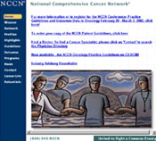
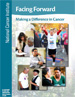
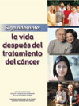

Follow-Up Medical Care After Cancer Treatment
Below you will find links to resources that may assist you in your dialogue with your physician about your follow-up care.
On this Page:
- The American Society of Clinical Oncology (ASCO)

A series of patient-friendly follow-up care guides based on published clinical versions are provided. Guides are focused on breast, colorectal and lung cancer. - M. D. Anderson Comprehensive Cancer Center
Information about follow-up procedures used to monitor cancer survivors is provided. Cancer Center guidelines are discussed for 15 different disease sites. - National Comprehensive Cancer Networks (NCCN)
NCCN Clinical Practice Guidelines have been translated into a patient-friendly guide outlining appropriate treatment. Guidelines are focused on breast, prostate and colorectal cancer.
- National Marrow Donor Program
This site contains information on the special health care needs of patients after transplant. - National Cancer Institute (NCI)
The NCI has developed a series of questions and answers about follow-up care after cancer treatment. The fact sheet provides information for cancer survivors on medical follow-up once primary cancer treatment ends.
- Children's Oncology Group (COG), Late Effects Directory of Services
This directory enables patients and families to locate late effects services within COG member institutions. - LIVESTRONG Survivorship Center of Excellence Network
- Children's Oncology Group Childhood Cancer Survivor Long-Term Follow-Up Guidelines
This site, supported by the Children's Oncology Group, provides recommendations for screening and management of late effects that may potentially arise as a result of therapeutic exposures used during treatment for pediatric malignancies.
 National Cancer Institute / Facing Forward: Making a Difference in Cancer
(Newly Revised)
This publication provides an overview of the potential benefits of becoming involved in cancer-related activities, such as helping with outreach and education, fundraising, or raising awareness about research or public health issues.
 National Cancer Institute / Facing Forward: Life After Cancer Treatment
National Cancer Institute / Facing Forward: Life After Cancer Treatment
This publication covers post-treatment issues such as follow-up medical care, physical and emotional changes, changes in social relationships, and workplace issues.
 Siga adelante: la vida después del tratamiento del cáncer
National Cancer Institute / Facing Forward: When Someone You Love Has Completed Cancer Treatment
This publication provides practical and supportive information to help caregivers cope with the shift in focus from treatment to recovery when caring for a loved one with cancer.